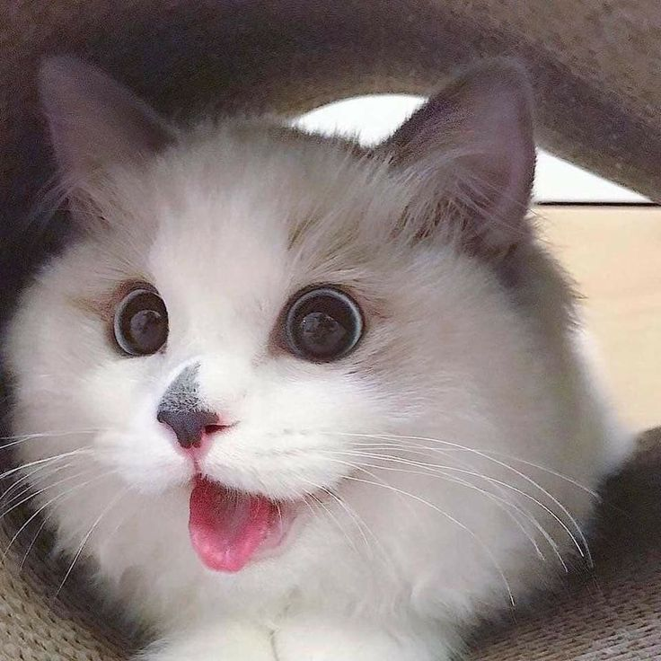
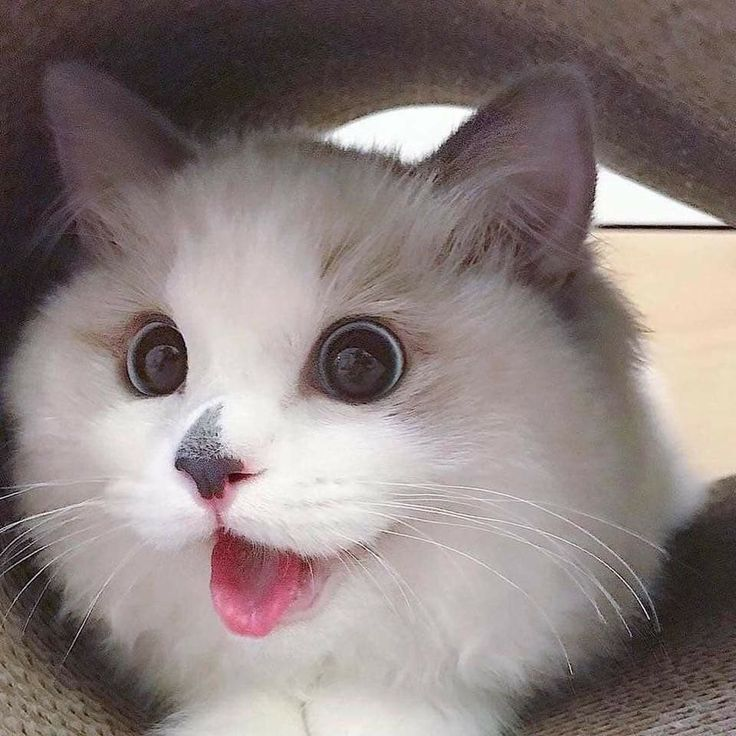

Fotos de gatos
Clique para ver mais fotos de gatos.
Clique para ver mais fotos de gatos.
Responda essa pesquisa nos ajude a entender mais sobre esses bichinhos.
PS: Se você quiser, pode anexar uma foto do seu gato para fazer parte de nossa galeria.
Quero participar da pesquisa
Voltar ao topo